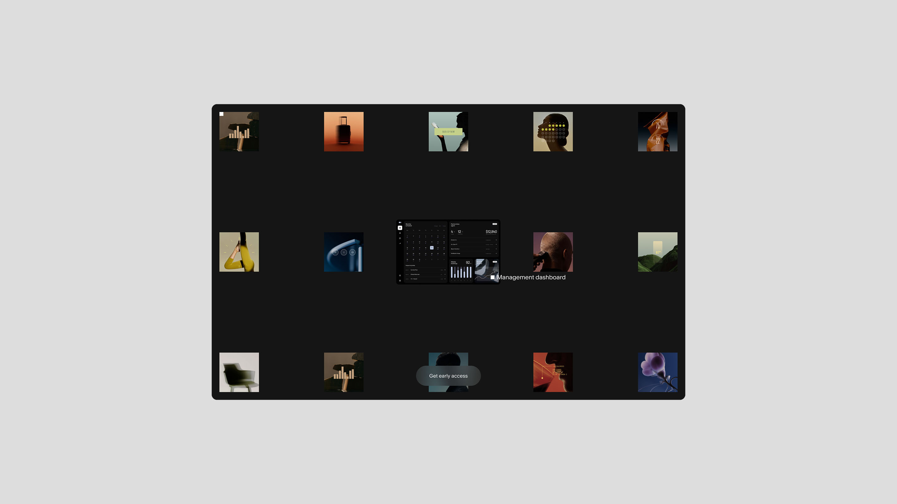
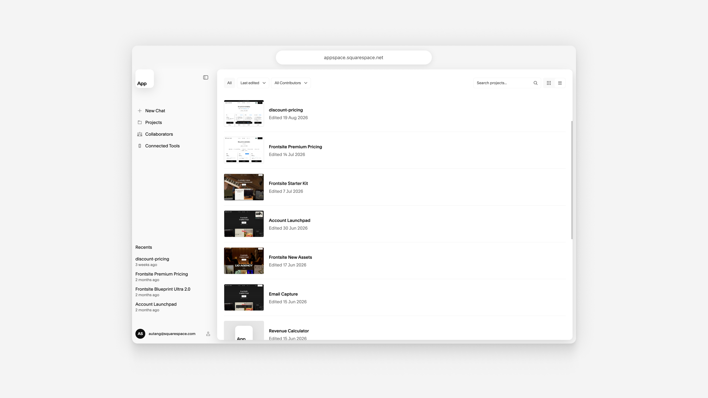
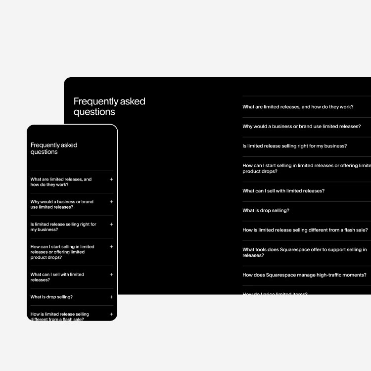
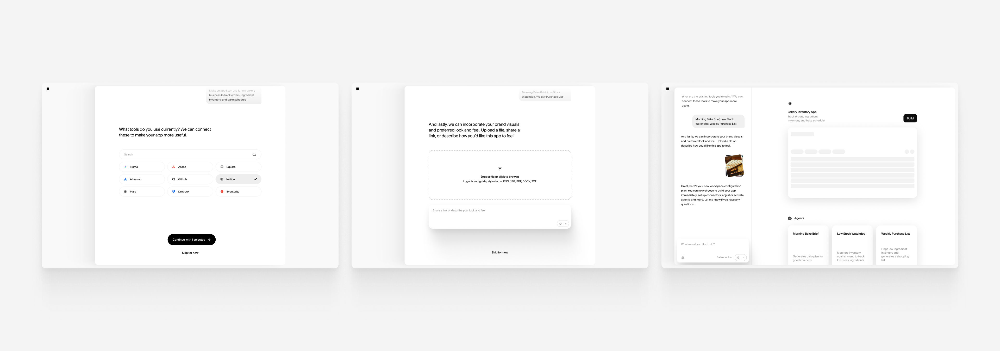
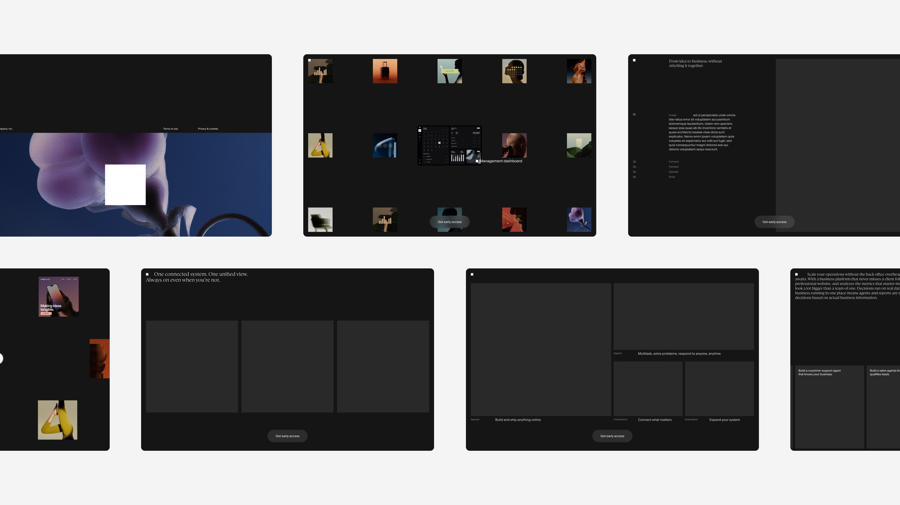

AI at Squarespace

This is highly confidential work. Please do not share or distribute without explicit permission. Thank you!
Work that started as broad and loose experimentation ended up informing the foundation for my impact on AI at Squarespace. This work is twofold. First, I established AI-native workflows for internal tools, automating process, design accelerants, and more. Then, I leveraged my fluency in AI workflows to lead brand and product design for Squarespace's new, unreleased AI-native product.
While building with AI, I've authored several reusable tools, to alleviate friction for my team and company-wide.
Squarespace internally launched an app hosting platform. Extremely useful for prototyping, but very technical for non-engineers to navigate. I authored a set of skills to aid with deployment and troubleshooting. Additionally, I created a simplified component and styles starter kit for anyone looking to vibe code frontend prototypes for the top of funnel surfaces.

I trained several agents to help my team automate repetitive tasks we were previously doing manually. I continue to experiment with agents and skills, finding what works (and doesn't quite work) when it comes to improving workflows. Here are a few of the most successful.
Business Affairs Assistant

Examines Figma files, including image assets and copy, and formats information into a robust approvals tracking sheet for BA review. Saves hours of manual sheet creation and maintenance.
Amplitude Dashboard Agent

Easily and quickly create new dashboards. Unlocks frictionless process to perform analysis across dashboards. Plus, standardizes dashboard formatting and configuration.
Figma Content Updater

Alleviates manual work to update all breakpoints in Figma designs during feedback loops with project stakeholders when content updates are provided across sheets, docs, Slack, Jira, and more.
Prototyping has always been core to my process. As I leveraged AI for higher fidelity comps and began vibe coding on branches directly in production repositories, I identified the opportunity for a global design component. I made a flexible toolbar, which my team now uses for iterative prototyping. The solution functions well for both developing concepts and securing stakeholder buy-in. Utilizing this tool has unlocked a new level of clarity when it comes to decision-making with leadership and comparison of nuanced UI and interaction tradeoffs.
Once I joined the new AI-native product team, I leveraged the foundations I built with workflow improvements to deepen my design impact on the product itself. I coded the agent logic model for a guided onboarding from initial input to provisioned workspace. In collaboration with my design coauthor, Tracey Chan and principal engineer Dave Myers, we shipped an alpha 100 proof of concept in just 5 days.
Currently, we are building a framework for beta to systematize and shape the model's understanding of how to adapt onboarding for pros, novices, and everyone in between. I'm auditing and refining the end to end journey with visual and interaction polish.

Developing the go-to-market strategy has required the same speed as building the product itself, and an even higher level of craft and polish. I've shaped the way we leverage frontend interaction and storytelling to develop a new top of funnel experience and design system. The global toolbar component has been an invaluable lever to quickly test variants, iterate on prototypes, and shape a new narrative for the company. Squarespace is no longer just a destination for website templates, but a powerful, extensible, and secure platform to build anything. This work has been a close collaboration between myself and principal designer, Virginie Delannoy.

More work to come, stay tuned! Please do not share any unreleased work without my permission. And if you've made it this far, thanks for taking the time!